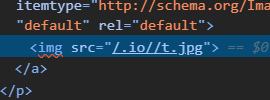
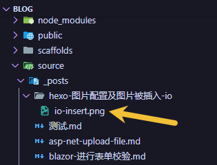

hexo 图片配置及图片被插入 io
hexo 图片配置及图片链接被插入 /.io//
现象
按照文档打开 hexo 的资源文件夹，来让每次新建的博客都有一个对应的存放图片的文件夹：
对于那些想要更有规律地提供图片和其他资源以及想要将他们的资源分布在各个文章上的人来说，Hexo也提供了更组织化的方式来管理资源。 这个稍微有些复杂但是管理资源非常方便的功能可以通过将 config.yml 文件中的 post_asset_folder 选项设为 true 来打开。
1 | |
新建文章，然后在对应的资源文件夹内放一个图片 t.jpg，然后在 markdown 内插入图片
1 | |
发现前端被转换成了：
1 | |

解决
hexo图片路径问题 给出了答案：
卸载 hexo-asset-image 插件即可。
1 | |
现在可以正常使用图片了。
上面 HTML 的截图就是按照如下文件夹结构插入的。
本文章的 md 与下图中 md 文件处于同一级目录下，使用  即可正确插入图片。

hexo 图片配置及图片被插入 io
https://taylorandtony.github.io/2025/03/25/hexo-图片配置及图片被插入-io/